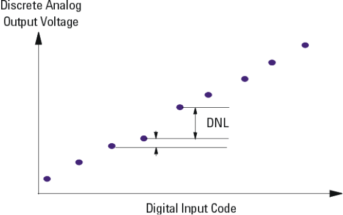
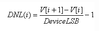
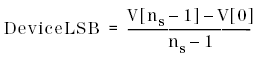
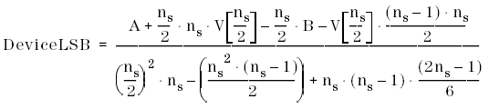
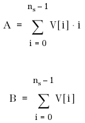
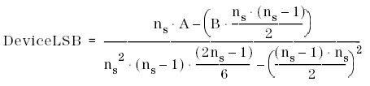
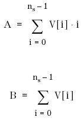

Differential Non-Linearity (DNL)
DNL is the deviation of the actual step size from the ideal step size of 1 LSB. It is expressed in fractions of 1 LSB. For an ideal DAC, DNL is zero.

Differential Non-Linearity can be calculated using the endpoint method, zero-point method, or minimum root mean square method.
Basically, all three methods use the same formula. Only the definition of the DeviceLSB varies from method to method.
The following formula for DNL calculation applies:

For the endpoint method the following DeviceLSB definition applies:

ns is the number of sampled data points.
For the zero-point method the following DeviceLSB definition applies:

with A and B defined as follows:

For the minimum root mean square method the following DeviceLSB definition applies:

with A and B defined as follows:
